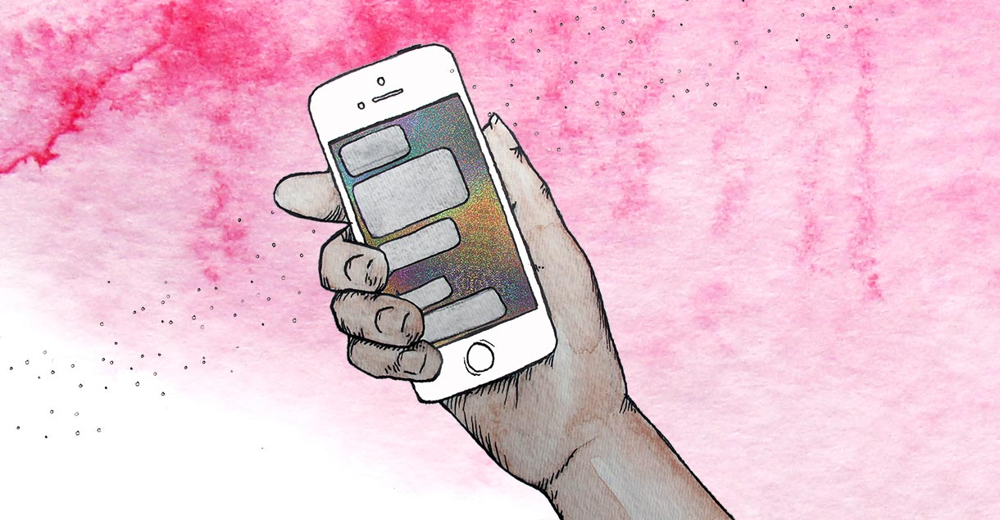

My partner is harassing me through my cell phone.
When your partner can contact you 24 hours a day, 7 days a week, it feels inescapable. You dread seeing their name pop-up in your notifications. When you get a call from an unfamiliar number, you're rife with anxiety. Maybe you've changed phone numbers to cut-off contact from an ex-partner, but they always discover your new number. It's as if they can reach you at any time, anywhere in the world.
Cell phone harassment is ubiquitous amongst controlling partners. Texting dozens or hundreds of times a day, calling repeatedly from known or unknown numbers: this is stalking behavior. Even if it's well-intentioned from a partner wanting to "check in", this behavior is intended to control, intimidate, and isolate. Our phones are not designed to protect us from this abuse—tech companies prioritize exposure over privacy, simplicity over configuration. The fact that you can be forced to change phone numbers, or install new apps, is itself a form of indirect harassment.
Cybersecurity strategies will help you take control of your cell phone. While there is no guaranteed way to stop motivated harassment, you can minimize the impact and decide how to react. Most strategies depend on having a smartphone; if you have a regular cell-phone, you will have fewer technical options available, although there will be fewer means of tech-based harassment. Stalking is illegal in the U.S., so should you want to take more authoritative action, consult a local Domestic Violence organization or lawyer for support. Reducing or eliminating communication with your partner carries a risk of escalation as they try to reassert control. Above all, prioritize your safety and well-being.
Take Advantage of App Settings
 Blocking a phone-number is the simplest way to cut-off contact from a partner. Unfortunately, this is rarely a satisfying solution. You may need your partner's number for communicating about your children. They may create new numbers that aren't blocked. When blocking is not a sustainable option for you, investigate the settings in your phone and texting apps. The goal is take as much control of your availability and attention as possible.
Blocking a phone-number is the simplest way to cut-off contact from a partner. Unfortunately, this is rarely a satisfying solution. You may need your partner's number for communicating about your children. They may create new numbers that aren't blocked. When blocking is not a sustainable option for you, investigate the settings in your phone and texting apps. The goal is take as much control of your availability and attention as possible.
Adjusting notifications for texts or calls can diminish your partner's ability to "surprise" you. Disabling notifications lets you communicate when you feel safe to do so, at the expense of instant communication to friends and family. Sometimes work or childcare demands constant availability, in which case you can disable notifications for periods of time when you need uninterrupted personal space. Then, when you need to, re-enable notifications.
Some apps, like Messages in iOS, offer settings for filtering unknown phone-numbers into a separate list. Disabling read-receipts means your partner can't know when you're using your cell phone. Turning off location-sharing will hide your physical whereabouts. Removing contact photos can eliminate a painful visual reminder of your partner's face. Deleting conversation history can be cathartic if you find yourself repeatedly reading old conversations (though you should preserve this history if you need evidence for legal purposes). Ultimately, see what your apps offer and customize them so you feel more at ease. No setting has to be permanent: you can always change them when you need to.
Use Alternative Texting Apps
Chances are you use the same texting apps for your partner and your friends, family, and coworkers. Securing these apps can create a sense of isolation: while you hinder your partners' access to you, you're also impeding access to your loved ones as well. Fortunately, there are multiple texting apps to choose from. You can use one app for your friends and family, and another for your partner. For example: maybe you only text your partner through the default messaging app, with notifications disabled. Then, you use Signal, a free texting app, to communicate privately with your friends. This strategy depends on how invasive your partner is—they may discover your availability on a different texting platform and try to harass you there too. It also requires your friends to install new apps, which hopefully they'll be sympathetic about. Still, having multiple texting apps gives you more opportunities to control your availability—you're not dependent on just one app.
When to Change Your Number?
 There is no right or wrong time to change your phone number. It's a personal choice based on the scope of your partner's harassment, the feasibility of changing your contact information amongst your social and business networks, and your financial means. It's possible that your partner could ascertain your new phone number eventually. Despite the difficulties, changing your number is always an option that can grant a degree of distance, even if only temporarily.
There is no right or wrong time to change your phone number. It's a personal choice based on the scope of your partner's harassment, the feasibility of changing your contact information amongst your social and business networks, and your financial means. It's possible that your partner could ascertain your new phone number eventually. Despite the difficulties, changing your number is always an option that can grant a degree of distance, even if only temporarily.
Should you decide to change your number, first create a back-up of any important photos and conversations that you want to preserve, especially any evidence of abuse. This process is outlined further in our Back-Up Your Data defense strategy. Make a mental note of any online accounts that are connected to your phone number, like social media or banking accounts—sometimes your login informations is tied to a cell phone number, so you should update these accounts with your new number when you're ready. Additionally, figure out if any of these accounts display your phone number. Profiles, like those on Facebook or LinkedIn, might reveal this data without your knowledge. You'll want to update your settings so that your new phone number will not be visible to the public.
Once you've changed your phone number, make a point not to give that number to any website, retailer, or survey unless absolutely necessary. These companies are known to sell phone numbers tied to names and addresses, which are then repackaged for tracing people online—such services are well-known amongst tech-savvy harassers. Don't hesitate to lie about your phone number, as well as other personal information, on the internet. Just because a website requires this data, it doesn't mean you're obligated to compromise your safety. Make up a fake number, address, or even a fake name. Very rarely will any website notice or care.
Conclusion
Controlling partners depend on the accessibility of cell phones to harass, intimidate, and demoralize. Explore your app settings for finer-grained control over your availability and attention when using your phone. Consider using multiple texting apps so you can separate your social networks from your partner on your phone. If you decide to change your number, be diligent about backing-up important data, collecting evidence of abuse, and protecting your personal information from greedy websites. While cell phone harassment can make it feel like your partner is always there, remember: they rely on technology because they're desperate for control. You have power over your technology. It's your life no matter what.